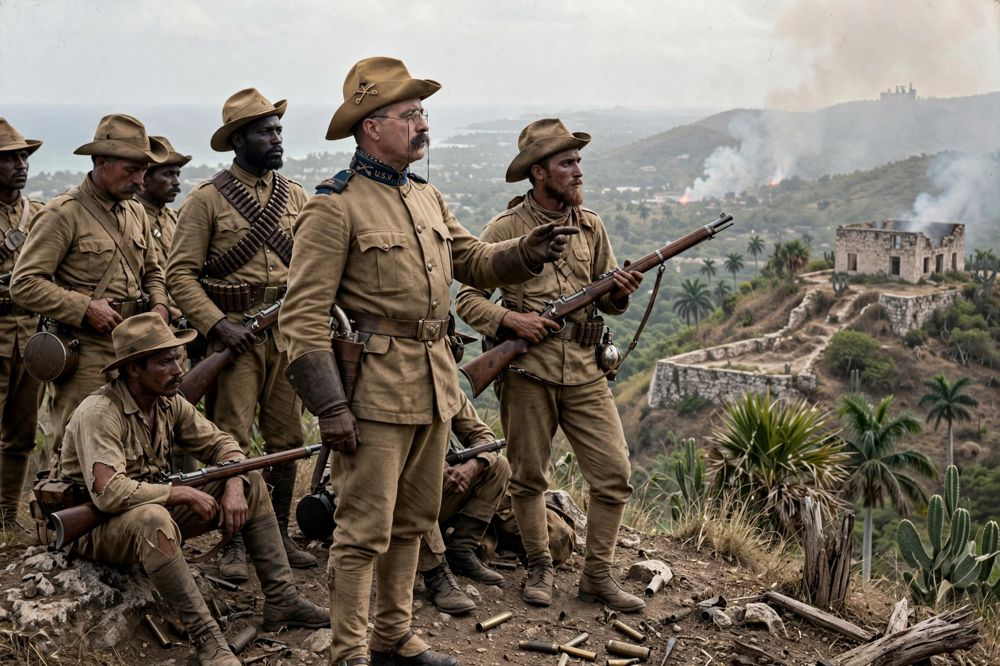

The Rough Riders was a nickname given to the 1st United States Volunteer Cavalry, one of three such regiments raised in 1898 for the Spanish–American War and the only one to see combat. The regiment was led by Colonel Leonard Wood, with Theodore Roosevelt as lieutenant colonel; Roosevelt later became its colonel and the unit's most famous member.

The volunteers were a diverse mix of cowboys, miners, college athletes, Native Americans and Ivy League gentlemen, recruited largely in the Southwest. Because shipping was limited, most horses were left behind and the regiment fought on foot as infantry.
The Rough Riders fought at Las Guasimas and, most famously, charged up Kettle Hill and San Juan Hill on 1 July 1898 alongside regular troops including African-American 'Buffalo Soldiers'. Disease, especially malaria and yellow fever, caused more losses than combat.
The unit was disbanded in September 1898. Its fame propelled Roosevelt to the governorship of New York, the vice presidency and, in 1901, the presidency, where he pursued the Square Deal.